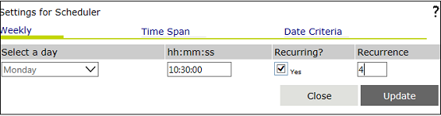
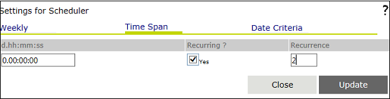
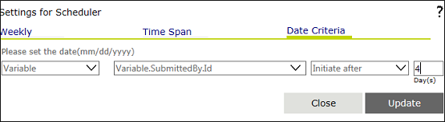
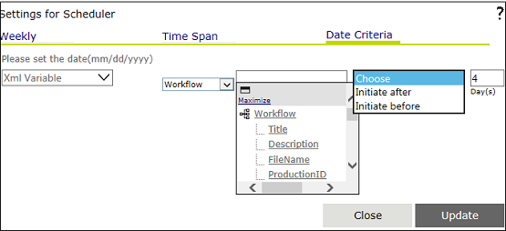

You can set the Scheduler Details settings in this property window. To open this window, click the button for the 'Scheduler Details' property. It has three tabs - Weekly, Time Span, and Date Criteria - to set the corresponding property value.
Weekly settings
By default, the first tab, i.e. Weekly, is selected. The user interface corresponding to this tab is shown in the image below. You can specify the weekly schedule settings here.

Weekly Settings for Scheduler Details property
This window has the following parameters for setting the weekly schedule.
Select a day - You can select the day of the week on which the activity is to be scheduled from the drop down for this field.
hh:mm:ss - You can specify the time at which the scheduled activity should be executed on the selected day in this field in the "hh:mm:ss" format.
Recurring ? - You can select this check box to schedule the activity to recur. This will enable the next field.
Recurrence - If the schedule is to recur more than once, you must specify the count in this field.
Time Span settings
If the Time Span tab is clicked, it displays the user interface shown in the image below. You can specify a time span for the schedule here.

Time Span Settings for Scheduler Details property
This window has the following parameters for setting the time span schedule.
d.hh:mm:ss - You can enter the time interval of the schedule in this field, in the "d.hh:mm:ss" format, where "d" denotes the number of days the schedule is set for while the time setting denotes the number of hours, minutes, or seconds. For example, if this value is set as 0.00:30:00, the activity will be executed every 30 minutes. If it is set as 1.00:30:00, the activity will be executed every 1 day and 30 minutes or 24 hours and 30 minutes.
Recurring? - You can select this check box to schedule the activity to recur. This will enable the next field.
Recurrence - If the schedule is to recur more than once, you must specify the count in this field.
Date Criteria settings
If the Date Criteria tab is clicked, it displays the user interface shown in the image below. Here, you can specify a date-based schedule.


This window has the following controls for setting the date criteria schedule.
The XML Variable drop down - You can select the XML variable from the list.
The XVAR drop down - You can select the date value from this list.
The schedule criteria drop down - You can select one of two options in this drop down - "Initiate before" or "Initiate after".
The time interval field - You can specify the time interval in number of days in this field.
Update - Click this option to save the newly added schedule settings.
Close - Click this option to close the property window without saving the newly added schedule settings.